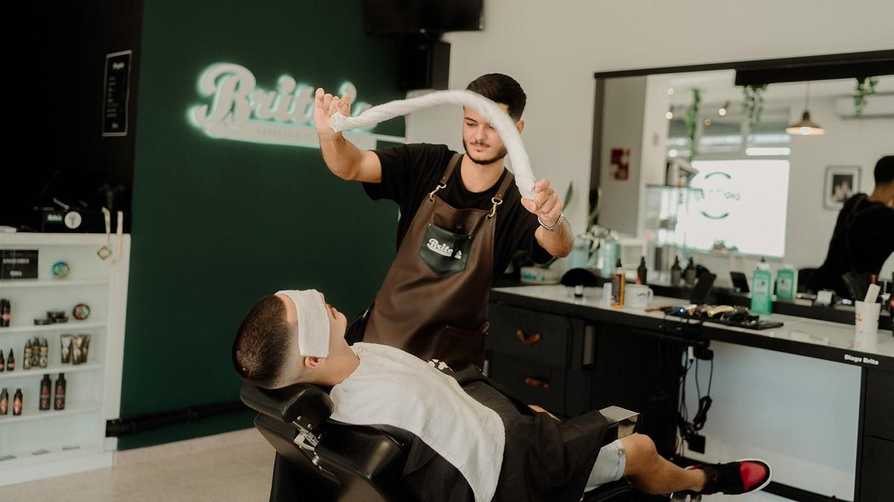
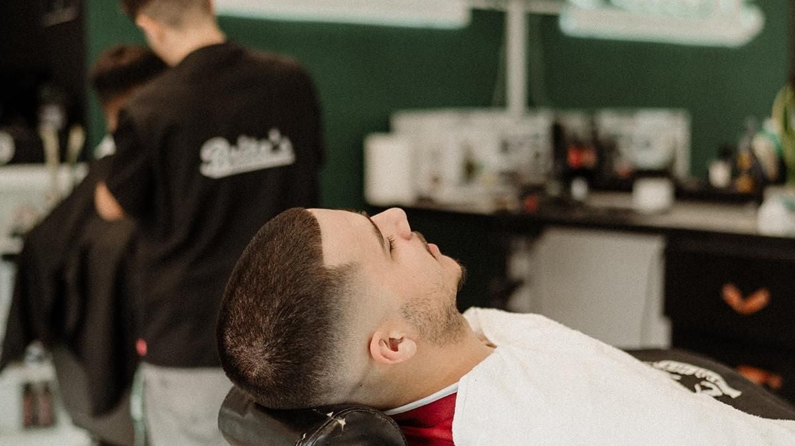

Prices
Every beard service comes with a hot-towel treatment.

Book online to pick your barber and time. Your booking is confirmed straight away.
Haircuts
40 min. Any fade from a 0, 0.5 or 1 guard, with the top cut by scissors or clippers.
40 min. Cut entirely with scissors.
20 min. One clipper length on the sides, top by clippers or scissors.
Beard and eyebrows
20 min. Full beard trim or shave, with a hot towel.
15 min. Eyebrows shaped with a straight razor.
Combos
1 h.
40 min.
1 h 15 min.
55 min.
55 min.
35 min.
Three barbers, one chair at a time
At Brito's, every cut gets time and attention to detail. We'll help you choose a cut that suits you and finish the beard with a hot towel. It's a relaxed place, and your dog is welcome too.
Reviews
419 reviews on Fresha. The fade is the cut clients praise most.

Very good manners, very pleasant all round.
Excelente serviço, grande profissionalismo e atenção ao detalhe. O Diogo nunca desilude.
Obrigado por mais um serviço espectacular.
Find us
Rua Jornal O Sambrazense, 20Edifício Flórida
8150-101 São Brás de Alportel, Portugal
Parking nearby. Wheelchair accessible. Pets welcome.
| Monday | 9:00–13:00, 14:00–20:00 |
|---|---|
| Tuesday | 9:00–13:00, 14:00–20:00 |
| Wednesday | 9:00–13:00, 14:00–20:00 |
| Thursday | 9:00–13:00, 14:00–20:00 |
| Friday | 9:00–13:00, 14:00–20:00 |
| Saturday | 9:00–13:00 |
| Sunday | Closed |